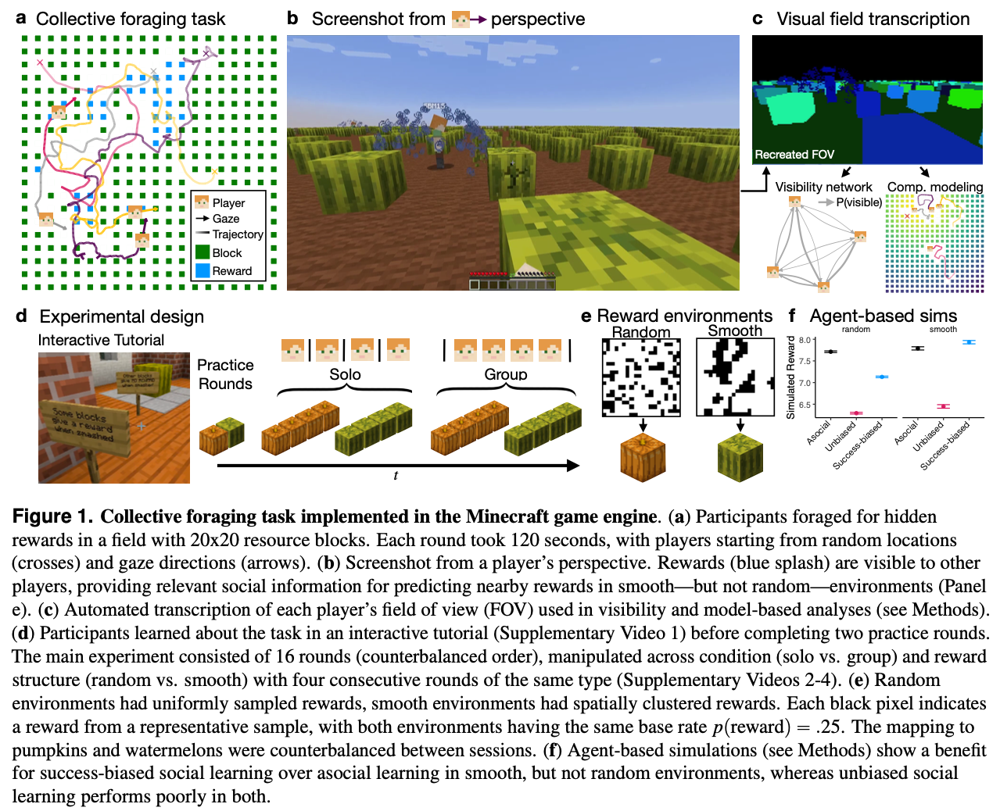
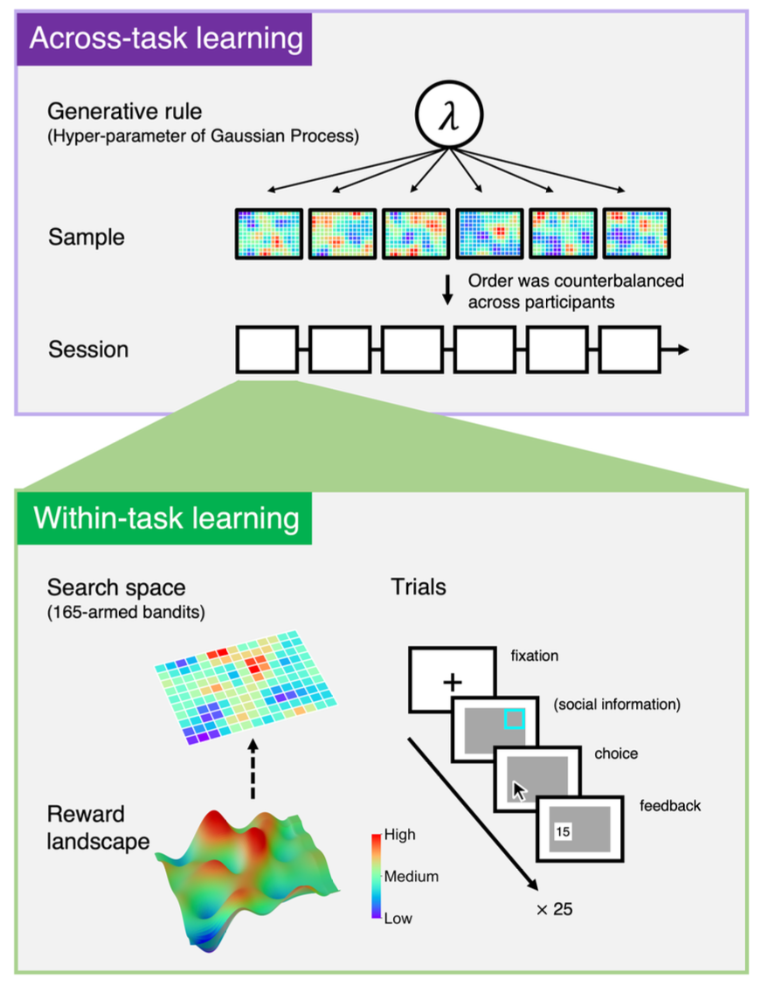
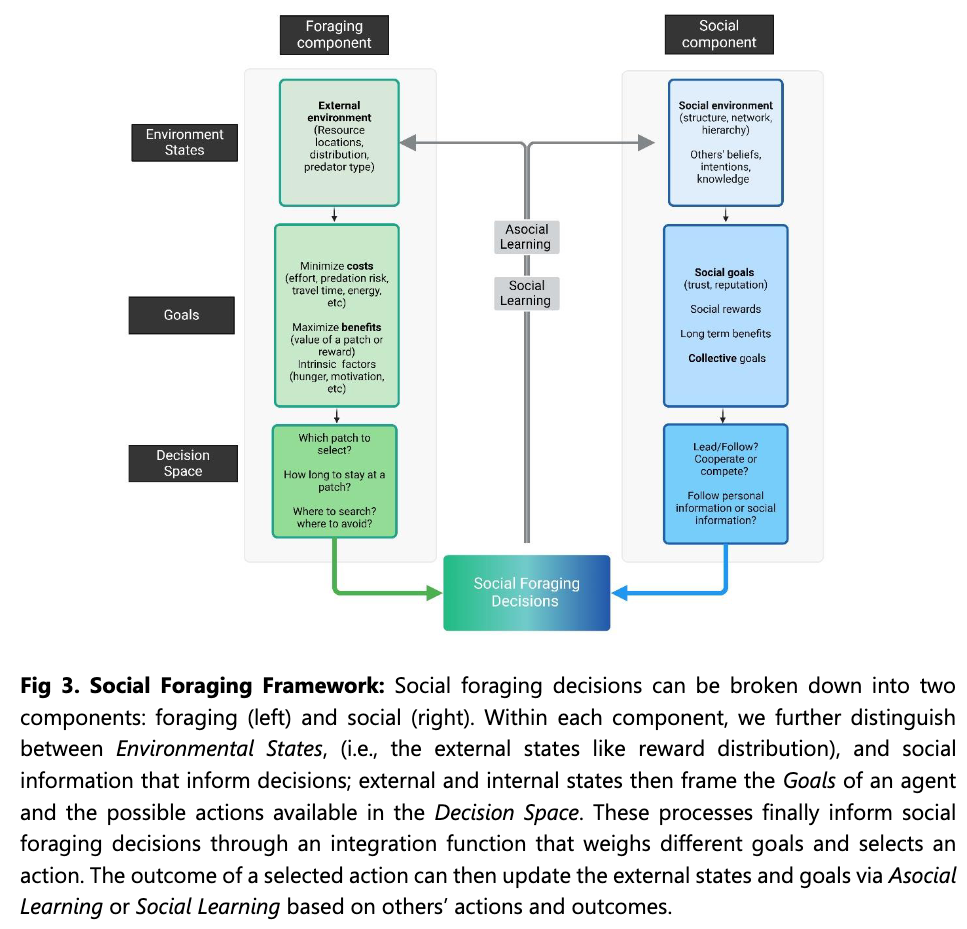

Samuel’s Project
Literature
Complexity
Task complexity moderates group synergy.
Almaatouq, A., Alsobay, M., Yin, M., & Watts, D. J. (2021). Task complexity moderates group synergy. Proceedings of the National Academy of Sciences, 118(36). https://doi.org/10.1073/pnas.2101062118
Abstract
Complexity—defined in terms of the number of components and the nature of the interdependencies between them—is clearly a relevant feature of all tasks that groups perform. Yet the role that task complexity plays in determining group performance remains poorly understood, in part because no clear language exists to express complexity in a way that allows for straightforward comparisons across tasks. Here we avoid this analytical difficulty by identifying a class of tasks for which complexity can be varied systematically while keeping all other elements of the task unchanged. We then test the effects of task complexity in a preregistered two-phase experiment in which 1,200 individuals were evaluated on a series of tasks of varying complexity (phase 1) and then randomly assigned to solve similar tasks either in interacting groups or as independent individuals (phase 2). We find that interacting groups are as fast as the fastest individual and more efficient than the most efficient individual for complex tasks but not for simpler ones. Leveraging our highly granular digital data, we define and precisely measure group process losses and synergistic gains and show that the balance between the two switches signs at intermediate values of task complexity. Finally, we find that interacting groups generate more solutions more rapidly and explore the solution space more broadly than independent problem solvers, finding higher-quality solutions than all but the highest-scoring individuals.

The interaction between map complexity and crowd movement on navigation decisions in virtual reality.
Zhao, H., Thrash, T., Grossrieder, A., Kapadia, M., Moussaïd, M., Hölscher, C., & Schinazi, V. R. (2020). The interaction between map complexity and crowd movement on navigation decisions in virtual reality. Royal Society Open Science, 7(3), 191523. https://doi.org/10.1098/rsos.191523
Abstract
A carefully designed map can reduce pedestrians’ cognitive load during wayfinding and may be an especially useful navigation aid in crowded public environments. In the present paper, we report three studies that investigated the effects of map complexity and crowd movement on wayfinding time, accuracy and hesitation using both online and laboratory-based networked virtual reality (VR) platforms. In the online study, we found that simple map designs led to shorter decision times and higher accuracy compared to complex map designs. In the networked VR set-up, we found that co-present participants made very few errors. In the final VR study, we replayed the traces of participants’ avatars from the second study so that they indicated a different direction than the maps. In this scenario, we found an interaction between map design and crowd movement in terms of decision time and the distributions of locations at which participants hesitated. Together, these findings can help the designers of maps for public spaces account for the movements of real crowds.

Task Complexity and Performance in Individuals and Groups Without Communication.
Gulati, A., Nguyen, T. N., & Gonzalez, C. (2021). Task Complexity and Performance in Individuals and Groups Without Communication. AAAI Fall Symposium. Cham: Springer Nature Switzerland, 8.
Abstract
While groups where members communicate with each other may perform better than groups without communication, there are multiple scenarios where communication between group members is not possible. Our work analyses the impact of task complexity on individuals and groups of different sizes while solving a goal-seeking navigation task without communication. Our major goal is to determine the effect of task complexity on performance and whether agents in a group are able to coordinate to perform the task more effectively despite the lack of communication. We developed a cognitive model of each individual agent that performs the task. We compare the performance of this agent with individual human performance, who worked on the same task. We observe that the cognitive agent is able to replicate the general behavioral trends observed in humans. Using this cognitive model, we generate groups of different sizes where individual agents work in the same goal-seeking task independently and without communication. First, we observe that increasing task complexity by design does not necessarily lead to worse performance in individuals and groups. We also observe that larger groups perform better than smaller groups and individuals alone. However, individual agents within a group perform worse than an agent working on the task alone. This effect is not the result of agents within a group covering less ground in the task compared to individuals alone. Rather, it is an effect resulting from the overlap of the agents within a group. Importantly, agents learn to reduce their overlap and improve their performance without explicit communication. These results can inform the design of AI agents in humanmachine teams.
Gulati et al. (2021)
Environmental memory boosts group formation of clueless individuals.
Dias, C. S., Trivedi, M., Volpe, G., Araújo, N. A. M., & Volpe, G. (2023). Environmental memory boosts group formation of clueless individuals. Nature Communications, 14(1), 7324. https://doi.org/10.1038/s41467-023-43099-0
Abstract
The formation of groups of interacting individuals improves performance and fitness in many decentralised systems, from micro-organisms to social insects, from robotic swarms to artificial intelligence algorithms. Often, group formation and high-level coordination in these systems emerge from individuals with limited information-processing capabilities implementing low-level rules of communication to signal to each other. Here, we show that, even in a community of clueless individuals incapable of processing information and communicating, a dynamic environment can coordinate group formation by transiently storing memory of the earlier passage of individuals. Our results identify a new mechanism of indirect coordination via shared memory that is primarily promoted and reinforced by dynamic environmental factors, thus overshadowing the need for any form of explicit signalling between individuals. We expect this pathway to group formation to be relevant for understanding and controlling self-organisation and collective decision making in both living and artificial active matter in real-life environments.
Uncertainty
Flexible social inference facilitates targeted social learning when rewards are not observable.
Hawkins, R. D., Berdahl, A. M., Pentland, A. ‘Sandy,’ Tenenbaum, J. B., Goodman, N. D., & Krafft, P. M. (2023). Flexible social inference facilitates targeted social learning when rewards are not observable. Nature Human Behaviour, 7(10), 1767–1776. https://doi.org/10.1038/s41562-023-01682-x
Abstract
Groups coordinate more effectively when individuals are able to learn from others’ successes. But acquiring such knowledge is not always easy, especially in real-world environments where success is hidden from public view. We suggest that social inference capacities may help bridge this gap, allowing individuals to update their beliefs about others’ underlying knowledge and success from observable trajectories of behaviour. We compared our social inference model against simpler heuristics in three studies of human behaviour in a collective-sensing task. Experiment 1 demonstrated that average performance improved as a function of group size at a rate greater than predicted by heuristic models. Experiment 2 introduced artificial agents to evaluate how individuals selectively rely on social information. Experiment 3 generalized these findings to a more complex reward landscape. Taken together, our findings provide insight into the relationship between individual social cognition and the flexibility of collective behaviour.

Tump, A. N., Wu, C. M., Bouhlel, I., & Goldstone, R. L. (2019). The Evolutionary Dynamics of Cooperation in Collective Search [Preprint]. http://biorxiv.org/lookup/doi/10.1101/538447
Abstract
How does cooperation arise in an evolutionary context? We approach this problem using a collective search paradigm where interactions are dynamic and there is competition for rewards. Using evolutionary simulations, we find that the unconditional sharing of information can be an evolutionary advantageous strategy without the need for conditional strategies or explicit reciprocation. Shared information acts as a recruitment signal and facilitates the formation of a self-organized group. Thus, the improved search efficiency of the collective bestows byproduct benefits onto the original sharer. A key mechanism is a visibility radius, where individuals have unconditional access to information about neighbors within a limited distance. Our results show that for a variety of initial conditions—including populations initially devoid of prosocial individuals—and across both static and dynamic fitness landscapes, we find strong selection pressure to evolve unconditional sharing.
Spatial planning with long visual range benefits escape from visual predators in complex naturalistic environments.
Mugan, U., & MacIver, M. A. (2020). Spatial planning with long visual range benefits escape from visual predators in complex naturalistic environments. Nature Communications, 11(1), 3057. https://doi.org/10.1038/s41467-020-16102-1
live task demo
code repository
Abstract
It is uncontroversial that land animals have more elaborated cognitive abilities than their aquatic counterparts such as fish. Yet there is no apparent a-priori reason for this. A key cognitive faculty is planning. We show that in visually guided predator-prey interactions, planning provides a significant advantage, but only on land. During animal evolution, the water-to-land transition resulted in a massive increase in visual range. Simulations of behavior identify a specific type of terrestrial habitat, clustered open and closed areas (savanna-like), where the advantage of planning peaks. Our computational experiments demonstrate how this patchy terrestrial structure, in combination with enhanced visual range, can reveal and hide agents as a function of their movement and create a selective benefit for imagining, evaluating, and selecting among possible future scenarios—in short, for planning. The vertebrate invasion of land may have been an important step in their cognitive evolution.
Peter’s Talks on Foraging
Tasks used in Other Studes
Structuring Knowledge with Cognitive Maps and Cognitive Graphs.
Peer, M., Brunec, I. K., Newcombe, N. S., & Epstein, R. A. (2021). Structuring Knowledge with Cognitive Maps and Cognitive Graphs. Trends in Cognitive Sciences, 25(1), 37–54. https://doi.org/10.1016/j.tics.2020.10.004
Abstract
Humans and animals use mental representations of the spatial structure of the world to navigate. The classical view is that these representations take the form of Euclidean cognitive maps, but alternative theories suggest that they are cognitive graphs consisting of locations connected by paths. We review evidence suggesting that both map-like and graph-like representations exist in the mind/brain that rely on partially overlapping neural systems. Maps and graphs can operate simultaneously or separately, and they may be applied to both spatial and nonspatial knowledge. By providing structural frameworks for complex information, cognitive maps and cognitive graphs may provide fundamental organizing schemata that allow us to navigate in physical, social, and conceptual spaces.


Wormholes in virtual space: From cognitive maps to cognitive graphs
Warren, W. H., Rothman, D. B., Schnapp, B. H., & Ericson, J. D. (2017). Wormholes in virtual space: From cognitive maps to cognitive graphs. Cognition, 166, 152–163. https://doi.org/10.1016/j.cognition.2017.05.020
Abstract
Humans and other animals build up spatial knowledge of the environment on the basis of visual information and path integration. We compare three hypotheses about the geometry of this knowledge of navigation space: (a) ‘cognitive map’ with metric Euclidean structure and a consistent coordinate system, (b) ‘topological graph’ or network of paths between places, and (c) ‘labelled graph’ incorporating local metric information about path lengths and junction angles. In two experiments, participants walked in a non-Euclidean environment, a virtual hedge maze containing two ‘wormholes’ that visually rotated and teleported them between locations. During training, they learned the metric locations of eight target objects from a ‘home’ location, which were visible individually. During testing, shorter wormhole routes to a target were preferred, and novel shortcuts were directional, contrary to the topological hypothesis. Shortcuts were strongly biased by the wormholes, with mean constant errors of 37° and 41° (45° expected), revealing violations of the metric postulates in spatial knowledge. In addition, shortcuts to targets near wormholes shifted relative to flanking targets, revealing ‘rips’ (86% of cases), ‘folds’ (91%), and ordinal reversals (66%) in spatial knowledge. Moreover, participants were completely unaware of these geometric inconsistencies, reflecting a surprising insensitivity to Euclidean structure. The probability of the shortcut data under the Euclidean map model and labelled graph model indicated decisive support for the latter (BFGM>100). We conclude that knowledge of navigation space is best characterized by a labelled graph, in which local metric information is approximate, geometrically inconsistent, and not embedded in a common coordinate system. This class of ‘cognitive graph’ models supports route finding, novel detours, and rough shortcuts, and has the potential to unify a range of data on spatial navigation.

Route effects in city-based survey knowledge estimates
Krukar, J., Navas Medrano, S., & Schwering, A. (2023). Route effects in city-based survey knowledge estimates. Cognitive Processing, 24(2), 213–231. https://doi.org/10.1007/s10339-022-01122-0
Abstract
When studying wayfinding in urban environments, researchers are often interested in obtaining measures of participants’ survey knowledge, i.e., their estimate of distant locations relative to other places. Previous work showed that distance estimations are consistently biased when no direct route is available to the queried target or when participants follow a detour. Here we investigated whether a corresponding bias is manifested in two other popular measures of survey knowledge: a pointing task and a sketchmapping task. The aim of this study was to investigate whether there is a systematic bias in pointing/sketchmapping performance associated with the preferred route choice in an applied urban setting. The results were mixed. We found moderate evidence for the presence of a systematic bias, but only for a subset of urban locations. When two plausible routes to the target were available, survey knowledge estimates were significantly biased in the direction of the route chosen by the participant. When only one plausible route was available, we did not find a statistically significant pattern. The results may have methodological implications for spatial cognition studies in applied urban settings that might be obtaining systematically biased survey knowledge estimates at some urban locations. Researchers should be aware that the choice of urban locations from which pointing and sketchmapping are performed might systematically distort the results, in particular when two plausible but diverging routes to the target are visible from the location.

Spatial decision dynamics during wayfinding: Intersections prompt the decision-making process.
Brunyé, T. T., Gardony, A. L., Holmes, A., & Taylor, H. A. (2018). Spatial decision dynamics during wayfinding: Intersections prompt the decision-making process. Cognitive Research: Principles and Implications, 3(1), 13. https://doi.org/10.1186/s41235-018-0098-3
Abstract
Intersections are critical decision points for wayfinders, but it is unknown how decision dynamics unfold during pedestrian wayfinding. Some research implies that pedestrians leverage available visual cues to actively compare options while in an intersection, whereas other research suggests that people strive to make decisions long before overt responses are required. Two experiments examined these possibilities while participants navigated virtual desktop environments, assessing information-seeking behavior (Experiment 1) and movement dynamics (Experiment 2) while approaching intersections. In Experiment 1, we found that participants requested navigation guidance while in path segments approaching an intersection and the guidance facilitated choice behavior. In Experiment 2, we found that participants tended to orient themselves toward an upcoming turn direction before entering an intersection, particularly as they became more familiar with the environment. Some of these patterns were modulated by individual differences in spatial ability, sense of direction, spatial strategies, and gender. Together, we provide novel evidence that deciding whether to continue straight or turn involves a dynamic, distributed decision-making process that is prompted by upcoming intersections and modulated by individual differences and environmental experience. We discuss implications of these results for spatial decision-making theory and the development of innovative adaptive, beacon-based navigation guidance systems.
Ericson, J. D., & Warren, W. H. (2020). Probing the invariant structure of spatial knowledge: Support for the cognitive graph hypothesis. Cognition, 200, 104276. https://doi.org/10.1016/j.cognition.2020.104276
Abstract
We tested four hypotheses about the structure of spatial knowledge used for navigation: (1) the Euclidean hypothesis, a geometrically consistent map; (2) the Neighborhood hypothesis, adjacency relations between spatial regions, based on visible boundaries; (3) the Cognitive Graph hypothesis, a network of paths between places, labeled with approximate local distances and angles; and (4) the Constancy hypothesis, whatever geometric properties are invariant during learning. In two experiments, different groups of participants learned three virtual hedge mazes, which varied specific geometric properties (Euclidean Control Maze, Elastic Maze with stretching paths, Swap Maze with alternating paths to the same place). Spatial knowledge was then tested using three navigation tasks (metric shortcuts on empty ground plane, neighborhood shortcuts with visible boundaries, route task in corridors). They yielded the following results: (a) Metric shortcuts were insensitive to detectable shifts in target location, inconsistent with the Euclidean hypothesis. (b) Neighborhood shortcuts were constrained by visible boundaries in the Elastic Maze, but not in the Swap Maze, contrary to the Neighborhood and Constancy hypotheses. (c) The route task indicated that a graph of the maze was acquired in all environments, including knowledge of local path lengths. We conclude that primary spatial knowledge is consistent with the Cognitive Graph hypothesis. Neighborhoods are derived from the graph, and local distance and angle information is not embedded in a geometrically consistent map.


Rational use of cognitive resources in human planning
Callaway, F., Van Opheusden, B., Gul, S., Das, P., Krueger, P. M., Griffiths, T. L., & Lieder, F. (2022). Rational use of cognitive resources in human planning. Nature Human Behaviour, 6(8), 1112–1125. https://doi.org/10.1038/s41562-022-01332-8
link to code link to paper link to live task demo

People construct simplified mental representations to plan.
Ho, M. K., Abel, D., Correa, C. G., Littman, M. L., Cohen, J. D., & Griffiths, T. L. (2022). People construct simplified mental representations to plan. Nature, 1–8. https://doi.org/10.1038/s41586-022-04743-9

Ho, M. K., Abel, D., Correa, C. G., Littman, M. L., Cohen, J. D., & Griffiths, T. L. (2021). Control of mental representations in human planning. arXiv:2105.06948 [Cs]. http://arxiv.org/abs/2105.06948
Emergent Collective Sensing in Human Groups.
Krafft, P. M., Hawkins, R. X., Pentland, A., Goodman, N. D., & Tenenbaum, J. B. (2015). Emergent Collective Sensing in Human Groups. In CogSci. https://people.csail.mit.edu/pkrafft/papers/krafft-et-al-2015-emergent.pdf
Towards a computational model of responsibility judgments in sequential human-AI collaboration
Tsirtsis, S., Gomez Rodriguez, M., & Gerstenberg, T. (2024). Towards a computational model of responsibility judgments in sequential human-AI collaboration. In Proceedings of the Annual Meeting of the Cognitive Science Society (Vol. 46). https://osf.io/preprints/psyarxiv/m4yad
Pattern-Driven Navigation in 2D Multiscale Visualizations with Scalable Insets.
Lekschas, F., Behrisch, M., Bach, B., Kerpedjiev, P., Gehlenborg, N., & Pfister, H. (2020). Pattern-Driven Navigation in 2D Multiscale Visualizations with Scalable Insets. IEEE Transactions on Visualization and Computer Graphics, 26(1), 611–621. IEEE Transactions on Visualization and Computer Graphics. https://doi.org/10.1109/TVCG.2019.2934555
Abstract
We present Scalable Insets, a technique for interactively exploring and navigating large numbers of annotated patterns in multiscale visualizations such as gigapixel images, matrices, or maps. Exploration of many but sparsely-distributed patterns in multiscale visualizations is challenging as visual representations change across zoom levels, context and navigational cues get lost upon zooming, and navigation is time consuming. Our technique visualizes annotated patterns too small to be identifiable at certain zoom levels using insets, i.e., magnified thumbnail views of the annotated patterns. Insets support users in searching, comparing, and contextualizing patterns while reducing the amount of navigation needed. They are dynamically placed either within the viewport or along the boundary of the viewport to offer a compromise between locality and context preservation. Annotated patterns are interactively clustered by location and type. They are visually represented as an aggregated inset to provide scalable exploration within a single viewport. In a controlled user study with 18 participants, we found that Scalable Insets can speed up visual search and improve the accuracy of pattern comparison at the cost of slower frequency estimation compared to a baseline technique. A second study with 6 experts in the field of genomics showed that Scalable Insets is easy to learn and provides first insights into how Scalable Insets can be applied in an open-ended data exploration scenario.

Wayfinding in pairs: Comparing the planning and navigation performance of dyads and individuals in a real-world environment.
Bae, C., Montello, D., & Hegarty, M. (2024). Wayfinding in pairs: Comparing the planning and navigation performance of dyads and individuals in a real-world environment. Cognitive Research: Principles and Implications, 9(1), 40. https://doi.org/10.1186/s41235-024-00563-9
Abstract
Navigation is essential to life, and it is cognitively complex, drawing on abilities such as prospective and situated planning, spatial memory, location recognition, and real-time decision-making. In many cases, day-to-day navigation is embedded in a social context where cognition and behavior are shaped by others, but the great majority of existing research in spatial cognition has focused on individuals. The two studies we report here contribute to our understanding of social wayfinding, assessing the performance of paired and individual navigators on a real-world wayfinding task in which they were instructed to minimize time and distance traveled. In the first study, we recruited 30 pairs of friends (familiar dyads); in the second, we recruited 30 solo participants (individuals). We compare the two studies to the results of an earlier study of 30 pairs of strangers (unfamiliar dyads). We draw out differences in performance with respect to spatial, social, and cognitive considerations. Of the three conditions, solo participants were least successful in reaching the destination accurately on their initial attempt. Friends traveled more efficiently than either strangers or individuals. Working with a partner also appeared to lend confidence to wayfinders: dyads of either familiarity type were more persistent than individuals in the navigation task, even after encountering challenges or making incorrect attempts. Route selection was additionally impacted by route complexity and unfamiliarity with the study area. Navigators explicitly used ease of remembering as a planning criterion, and the resulting differences in route complexity likely influenced success during enacted navigation.


{kind=link}
{kind=link}
{kind=link}
{kind=link}
{kind=link}
{kind=link}
{kind=link}
Individual and collective foraging in autonomous search agents with human intervention
Schloesser, D. S., Hollenbeck, D., & Kello, C. T. (2021). Individual and collective foraging in autonomous search agents with human intervention. Scientific Reports, 11(1), Article 1. https://doi.org/10.1038/s41598-021-87717-7
Abstract
Humans and other complex organisms exhibit intelligent behaviors as individual agents and as groups of coordinated agents. They can switch between independent and collective modes of behavior, and flexible switching can be advantageous for adapting to ongoing changes in conditions. In the present study, we investigated the flexibility between independent and collective modes of behavior in a simulated social foraging task designed to benefit from both modes: distancing among ten foraging agents promoted faster detection of resources, whereas flocking promoted faster consumption. There was a tradeoff between faster detection versus faster consumption, but both factors contributed to foraging success. Results showed that group foraging performance among simulated agents was enhanced by loose coupling that balanced distancing and flocking among agents and enabled them to fluidly switch among a variety of groupings. We also examined the effects of more sophisticated cognitive capacities by studying how human players improve performance when they control one of the search agents. Results showed that human intervention further enhanced group performance with loosely coupled agents, and human foragers performed better when coordinating with loosely coupled agents. Humans players adapted their balance of independent versus collective search modes in response to the dynamics of simulated agents, thereby demonstrating the importance of adaptive flexibility in social foraging.

{kind=link}
Alharbi, A. H., Khafaga, D. S., El-kenawy, E.-S. M., Eid, M. M., Ibrahim, A., Abualigah, L., Khodadadi, N., & Abdelhamid, A. A. (2024). Optimizing electric vehicle paths to charging stations using parallel greylag goose algorithm and Restricted Boltzmann Machines. Frontiers in Energy Research, 12. https://doi.org/10.3389/fenrg.2024.1401330
Garg, K., Kello, C. T., & Smaldino, P. E. (2022). Individual exploration and selective social learning: Balancing exploration–exploitation trade-offs in collective foraging. Journal of The Royal Society Interface, 19(189), 20210915. https://doi.org/10.1098/rsif.2021.0915
Mezey, D., Deffner, D., Kurvers, R. H. J. M., & Romanczuk, P. (2024). Visual social information use in collective foraging. PLOS Computational Biology, 20(5), e1012087. https://doi.org/10.1371/journal.pcbi.1012087
Task Brainstorming
Click on one of the tasks to activate, then use the arrow keys to control the car
Social Influence
Visual-spatial dynamics drive adaptive social learning in immersive environments
Wu, C. M., Deffner, D., Kahl, B., Meder, B., Ho, M. H., & Kurvers, R. H. J. M. (2023). Visual-spatial dynamics drive adaptive social learning in immersive environments [Preprint]. https://doi.org/10.1101/2023.06.28.546887
Abstract
Humans are uniquely capable social learners. Our capacity to learn from others across short and long timescales is a driving force behind the success of our species. Yet there are seemingly maladaptive patterns of human social learning, characterized by both overreliance and underreliance on social information. Recent advances in animal research have incorporated rich visual and spatial dynamics to study social learning in ecological contexts, showing how simple mechanisms can give rise to intelligent group dynamics. However, similar techniques have yet to be translated into human research, which additionally requires integrating the sophistication of human individual and social learning mechanisms. Thus, it is still largely unknown how humans dynamically adapt social learning strategies to different environments and how group dynamics emerge under realistic conditions. Here, we use a collective foraging experiment in an immersive Minecraft environment to provide unique insights into how visual-spatial interactions give rise to adaptive, specialized, and selective social learning. Our analyses show how groups adapt to the demands of the environment through specialization of learning strategies rather than homogeneity and through the adaptive deployment of selective imitation rather than indiscriminate copying. We test these mechanisms using computational modeling, providing a deeper understanding of the cognitive mechanisms that dynamically influence social decision-making in ecological contexts. All results are compared against an asocial baseline, allowing us to specify specialization and selective attention as uniquely social phenomena, which provide the adaptive foundations of human social learning.

Specialization and selective social attention establishes the balance between individual and social learning.
Wu, C. M., Ho, M. K., Kahl, B., Leuker, C., Meder, B., & Kurvers, R. H. J. M. (2021). Specialization and selective social attention establishes the balance between individual and social learning. Proceedings of the 43rd Annual Conference of the Cognitive Science Society, 1921–1927. https://doi.org/10.1101/2021.02.03.429553
Abstract
A key question individuals face in any social learning environment is when to innovate alone and when to imitate others. Previous simulation results have found that the best performing groups exhibit an intermediate balance, yet it is still largely unknown how individuals collectively negotiate this balance. We use an immersive collective foraging experiment, implemented in the Minecraft game engine, facilitating unprecedented access to spatial trajectories and visual field data. The virtual environment imposes a limited field of view, creating a natural trade-off between allocating visual attention towards individual innovation or to look towards peers for social imitation. By analyzing foraging patterns, social interactions (visual and spatial), and social influence, we shine new light on how groups collectively adapt to the fluctuating demands of the environment through specialization and selective imitation, rather than homogeneity and indiscriminate copying of others.
Collective incentives reduce over-exploitation of social information in unconstrained human groups.
Deffner, D., Mezey, D., Kahl, B., Schakowski, A., Romanczuk, P., Wu, C. M., & Kurvers, R. H. J. M. (2024). Collective incentives reduce over-exploitation of social information in unconstrained human groups. Nature Communications, 15(1), 2683. https://doi.org/10.1038/s41467-024-47010-3
Abstract
Collective dynamics emerge from countless individual decisions. Yet, we poorly understand the processes governing dynamically-interacting individuals in human collectives under realistic conditions. We present a naturalistic immersive-reality experiment where groups of participants searched for rewards in different environments, studying how individuals weigh personal and social information and how this shapes individual and collective outcomes. Capturing high-resolution visual-spatial data, behavioral analyses revealed individual-level gains—but group-level losses—of high social information use and spatial proximity in environments with concentrated (vs. distributed) resources. Incentivizing participants at the group (vs. individual) level facilitated adaptation to concentrated environments, buffering apparently excessive scrounging. To infer discrete choices from unconstrained interactions and uncover the underlying decision mechanisms, we developed an unsupervised Social Hidden Markov Decision model. Computational results showed that participants were more sensitive to social information in concentrated environments frequently switching to a social relocation state where they approach successful group members. Group-level incentives reduced participants’ overall responsiveness to social information and promoted higher selectivity over time. Finally, mapping group-level spatio-temporal dynamics through time-lagged regressions revealed a collective exploration-exploitation trade-off across different timescales. Our study unravels the processes linking individual-level strategies to emerging collective dynamics, and provides tools to investigate decision-making in freely-interacting collectives.
Insights about the common generative rule underlying an information foraging task can be facilitated via collective search.
Naito, A., Katahira, K., & Kameda, T. (2022). Insights about the common generative rule underlying an information foraging task can be facilitated via collective search. Scientific Reports, 12(1), 8047.
Abstract
Social learning is beneficial for efficient information search in unfamiliar environments (“within-task” learning). In the real world, however, possible search spaces are often so large that decision makers are incapable of covering all options, even if they pool their information collectively. One strategy to handle such overload is developing generalizable knowledge that extends to multiple related environments (“across-task” learning). However, it is unknown whether and how social information may facilitate such across-task learning. Here, we investigated participants’ social learning processes across multiple laboratory foraging sessions in spatially correlated reward landscapes that were generated according to a common rule. The results showed that paired participants were able to improve efficiency in information search across sessions more than solo participants. Computational analysis of participants’ choice-behaviors revealed that such improvement across sessions was related to better understanding of the common generative rule. Rule understanding was correlated within a pair, suggesting that social interaction is a key to the improvement of across-task learning.

Individualism versus collective movement during travel.
Doherty, C. T. M., & Laidre, M. E. (2022). Individualism versus collective movement during travel. Scientific Reports, 12(1), 7508. https://doi.org/10.1038/s41598-022-11469-1
Abstract
Collective movement may emerge if coordinating one’s movement with others produces a greater benefit to oneself than can be achieved alone. Experimentally, the capacity to manoeuvre simulated groups in the wild could enable powerful tests of the impact of collective movement on individual decisions. Yet such experiments are currently lacking due to the inherent difficulty of controlling whole collectives. Here we used a novel technique of experimentally simulating the movement of collectives of social hermit crabs (Coenobita compressus) in the wild. Using large architectural arrays of shells dragged across the beach, we generated synchronous collective movement and systematically varied the simulated collective’s travel direction as well as the context (i.e., danger level). With drone video from above, we then tested whether focal individuals were biased in their movement by the collective. We found that, despite considerable engagement with the collective, individuals’ direction was not significantly biased. Instead, individuals expressed substantial variability across all stimulus directions and contexts. Notably, individuals typically achieved shorter displacements in the presence of the collective versus in the presence of the control stimulus, suggesting an impact of traffic. The absence of a directional bias in individual movement due to the collective suggests that social hermit crabs are individualists, which move with a high level of opportunistic independence, likely thanks to the personal architecture and armour they carry in the form of a protective shell. Future studies can manipulate this level of armour to test its role in autonomy of movement, including the consequences of shell architecture for social decisions. Our novel experimental approach can be used to ask many further questions about how and why collective and individual movement interact.
Beyond the individual: A social foraging framework to study decisions in groups.
Garg, K., Deng, W., & Mobbs, D. (2024). Beyond the individual: A social foraging framework to study decisions in groups. OSF. https://doi.org/10.31219/osf.io/rmqyb
Abstract
A key goal of the behavioral sciences is to understand how agents decide between rewarding, hazardous, and conflicting options. Foraging theory, which is rooted in ecology and evolutionary theory, has helped advance this pursuit but has largely been limited to the study of the individual. In this Perspective, we extend beyond an individual. We propose social foraging as a promising avenue to study social decisions, or decisions within a social context. Recent research has already applied similar paradigms to study social behavior in naturalistic conditions. We synthesize the key socio-cognitive elements involved in social foraging that can be further studied through foraging paradigms. We then propose a social foraging framework that distinguishes between the asocial and social components involved in the decision-making process and describes their integration. Our framework bridges research across disciplines to provide a promising new avenue for the study of social behavior by linking decisions across different scales, from individuals to collectives.
